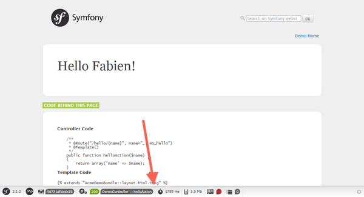
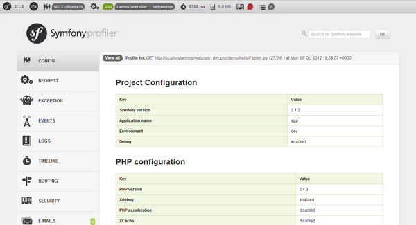

コンテンツ上部に更新日の記載のないページは、翻訳の内容が2.0相当のものになっております。最新の内容は原文のページをご確認ください。
Note
- 対象バージョン：2.3以降
- 翻訳更新日：2013/11/23
Symfony2 の全体像¶
今から 10 分で、Symfony2 を使い始める準備をしましょう！ この章では、Symfony2 の基盤となっているとても重要な概念について解説します。 Symfony2 の単純なプロジェクトの構造を見ていきながら、これらの概念について説明します。
すでに Web アプリケーションフレームワークを使ったことのある方なら、Symfony2 にすぐに慣れることができるでしょう。 はじめて Web アプリケーションフレームワークについて学ぶ方は、新しい Web アプリケーションの開発方法をしっかりと学習してください！
Tip
フレームワークを「なぜ」「いつ」使うのかを学びたい方は、”Symfony について 5 分で知る” ドキュメントをお読みください。
Symfony2 をダウンロードする¶
最初に、Web サーバー（たとえば Apache）のインストールと設定が完了しており、PHP 5.3.3 以降のバージョンがインストールされていることを確認してください。
Tip
PHP 5.4 を使っている場合は、ビルトイン Web サーバーを使って Symfony をすぐに試すことができます。 ビルトイン Web サーバーの起動方法については、 Symfony のダウンロードの後で解説します。
次に、”Symfony2 Standard Edition” をダウンロードしましょう。 これは Symfony のディストリビューションで、もっともよく利用されるユースケース向けにあらかじめ構成されています。 また、Symfony2 の使い方を学ぶためのデモンストレーションコードも含まれています。 ダウンロード画面で vendors が含まれているアーカイブ（without vendorsではないもの）を選択すると、より手軽に環境の準備が整います。
ダウンロードしたアーカイブを Web サーバーのドキュメントルートディレクトリで展開すると、次のような構成の Symfony/ ディレクトリができます。
www/ <- Web サーバーのドキュメントルートディレクトリ
Symfony/ <- ダウンロードしたアーカイブを展開したもの
app/
cache/
config/
logs/
Resources/
bin/
src/
Acme/
DemoBundle/
Controller/
Resources/
...
vendor/
symfony/
doctrine/
...
web/
app.php
...
Tip
ビルトイン Web サーバーを使う場合、アーカイブを展開するディレクトリはどこであってもかまいません。
Note
Composer の使い方を知っている方は、Composer をダウンロードした後次のコマンドを実行してください(2.3.0 の部分は最新の Symfony リリース番号に置き換えてください)。
$ php composer.phar create-project symfony/framework-standard-edition Symfony 2.3.0
PHP 5.4 をお使いの場合は、次のコマンドでビルトイン Web サーバーを起動します。
# 最初に PHP CLI の設定を確認します
$ php app/check.php
# ビルトイン Web サーバーを起動します
$ php app/console server:run
アプリケーションの URL は、”http://localhost:8000/app_dev.php” になります。
ビルトイン Web サーバーは開発者向けなので公開用途には利用できませんが、素早く手軽にプロジェクトを開始できます。
Apache などの通常の Web サーバーを利用している場合、アプリケーションの URL は Web サーバーの設定によって異なります。Symfony のアーカイブファイルを Web サーバーのドキュメントルートディレクトリ配下に Symfony というディレクトリ名で展開した場合、アプリケーションの URL は “http://localhost/Symfony/web/app_dev.php” となります。
Note
詳細は Web サーバーのコンフィギュレーション を参照してください。
設定を確認する¶
Symfony2 には、ビジュアルにサーバーの設定を確認するテスターが組み込まれており、これを使うことで Web サーバーや PHP の設定の間違いによる混乱を回避できます。 次の URL にアクセスすると、使っている環境の診断結果が表示されます。
http://localhost/config.php
Note
これ以降の例として記載している URL は、説明を分かりやすくするために、プロジェクトの web/ ディレクトリが Web サーバーのドキュメントルートディレクトリとして設定されていることを前提としています。これは、先に説明したものと異なっています。URL は環境によって http://localhost:8000/config.php や http://localhost/Symfony/web/config.php となります。前節を参照してお使いの環境の URL を確認し、以降の例ではその URL に読み替えてください。
問題がある設定のリストが表示された場合は、それぞれ解決してください。 推奨される設定と異なっている箇所も表示されるので、可能であればそれらも変更してください。 すべての準備が整ったら、”Bypass configuration and go to the Welcome page” というリンクをクリックして、最初の Symfony2 Web ページへアクセスしてみましょう。
http://localhost/app_dev.php/
ここまでの準備が完了していれば、次のような Welcome 画面が表示されるはずです。

Symfony2 の基盤技術を理解する¶
フレームワークを利用することの主要な目的の 1 つに、関心事の分離という概念があります。 この概念によりコードは組織化され、たとえばデータベース呼び出し、HTML タグ、ビジネスロジックが同一のスクリプトに混在するような状況を回避でき、長期に渡るアプリケーションの進化にも対応しやすくなります。 適切に関心が分離された Symfony2 アプリケーションを開発するために、最初に基本的な概念や用語を知っておくことが重要です。
Tip
同一のスクリプトにすべてを混在して記述するよりもフレームワークを使うことの方が優れている理由を知りたい方は、”Symfony2 vs フラットなPHP” の章をお読みください。
Symfony2 のディストリビューションには、Symfony2 の主要なコンセプトを学習するのに使えるサンプルコードが含まれています。 次の URL にアクセスすると、Symfony2 アプリケーションによる挨拶メッセージが表示されます（URL の Fabien の部分は自分の名前に置き換えてみてください）
http://localhost/app_dev.php/demo/hello/Fabien
これはどういった仕組みで実現されているのでしょうか？ まずは URL のパーツを順に見ていきましょう。
- app_dev.php: これはフロントコントローラーです。 アプリケーションごとの単一のエントリポイントで、ユーザーからのすべてのリクエストに応答します。
- /demo/hello/Fabien: この部分は、ユーザーがアクセスしようとしているリソースのバーチャルパスです。
開発者は、ユーザーのリクエスト (/demo/hello/Fabien) を関連するリソース（この例では Hello Fabien! と表示する HTML ページ）へマップするコードを記述します。
ルーティング¶
Symfony2 では、リクエストされた URL（バーチャルパス）に対して開発者が設定したパターンでマッチングを行い、対応するコードへリクエストを引き渡します。 デフォルトでは、この処理に使われるパターン（ルートと呼びます）を app/config/routing.yml コンフィギュレーションファイルに記述します。dev 環境 - これはフロントコントローラー app_dev.php の部分に相当します - の場合は app/config/routing_dev.yml が読み込まれます。Standard Edition では、デモ用ページのルートもインポートされます。
# app/config/routing_dev.yml
# ...
# AcmeDemoBundle routes (to be removed)
_acme_demo:
resource: "@AcmeDemoBundle/Resources/config/routing.yml"
この設定で、AcmeDemoBundle にある routing.yml ファイルがインポートされます。
# src/Acme/DemoBundle/Resources/config/routing.yml
_welcome:
path: /
defaults: { _controller: AcmeDemoBundle:Welcome:index }
_demo:
resource: "@AcmeDemoBundle/Controller/DemoController.php"
type: annotation
prefix: /demo
# ...
先頭のコメントの後の 3 行は、ユーザーが “/” リソースをリクエストした時に実行されるコードを定義しています（ここでは Welcome のページ）。 リクエストがあると、AcmeDemoBundle:Welcome:index コントローラーが実行されます。次の節で、コントローラーの処理について解説します。
Tip
Symfony2 Standard Edition では、コンフィギュレーションファイルのフォーマットとして YAML が利用されていますが、XML、PHP、およびアノテーションによるコンフィギュレーションもネイティブでサポートされています。 これらのフォーマットは内部的には同等であり、1つのアプリケーションに異なるフォーマットを混在させることもできます。 また、初回のリクエスト時にすべてのコンフィギュレーションのコンパイル結果がキャッシュされるので、アプリケーションのパフォーマンスは利用するコンフィギュレーションのフォーマットには依存しないことに注意してください。
コントローラー¶
コントローラーとは PHP の関数またはメソッドで、受け取ったリクエストを処理し、レスポンス（通常は HTML コード）を返します。 Symfony では、$_GET や header() のような PHP のグローバル変数や関数を使う代わりに、これらの HTTP メッセージを管理する Request オブジェクトや Response オブジェクトを使います。 リクエストに基づいて、手作業でレスポンスオブジェクトを作成する最も単純なコントローラーは、次のようになります。
use Symfony\Component\HttpFoundation\Response;
$name = $request->query->get('name');
return new Response('Hello '.$name, Response::HTTP_OK, array('Content-Type' => 'text/plain'));
New in version 2.4: HTTP ステータスコード定数のサポートは Symfony 2.4 で追加されました。
Note
Symfony2 は、Web のあらゆる通信を規定する HTTP 仕様に基づいています。詳細は “Symfony2 と HTTP の基礎” の章をお読みください。
ルーティングコンフィギュレーションに設定された _controller の値を元に、実行するコントローラーが決定されます（AcmeDemoBundle:Welcome:index がコントローラーを表す）。 AcmeDemoBundle:Welcome:index はコントローラーの論理名で、今回の例では Acme\DemoBundle\Controller\WelcomeController クラスの indexAction メソッドを参照しています。
// src/Acme/DemoBundle/Controller/WelcomeController.php
namespace Acme\DemoBundle\Controller;
use Symfony\Bundle\FrameworkBundle\Controller\Controller;
class WelcomeController extends Controller
{
public function indexAction()
{
return $this->render('AcmeDemoBundle:Welcome:index.html.twig');
}
}
Tip
ルーティングコンフィギュレーションに記述する _controller の参照先として Acme\DemoBundle\Controller\WelcomeController::indexAction という記法も使用できますが、規約に沿った論理名を使うことでより簡潔で柔軟になります。
WelcomeController コントローラークラスは、組み込みの Controller クラスを継承します。 Controller クラスには、テンプレート (AcmeDemoBundle:Welcome:index.html.twig) を読み込んでレンダリングする render() メソッドのような便利なショートカットメソッドが定義されています。render() メソッドの戻り値は Response オブジェクトで、レンダリング結果が含まれています。必要であれば、ユーザーのブラウザへ送信される前に Response の内容を変更できます。
public function indexAction()
{
$response = $this->render('AcmeDemoBundle:Welcome:index.txt.twig');
$response->headers->set('Content-Type', 'text/plain');
return $response;
}
処理内容に関係なく、コントローラーは必ず Response オブジェクトを返します。Response オブジェクトは、HTML コードから生成したり、クライアントのリダイレクトを表したりできます。また、Response オブジェクトで Content-Type ヘッダーに image/jpg を指定して JPG 画像データを返すこともできます。
Tip
Symfony はどのようなクラスでもコントローラーとして扱えるため、Controller 基底クラスを継承することは必須ではありません。 また、クラスのメソッドだけでなく、プレーンな PHP 関数や PHP のクロージャをコントローラーにすることもできます。 Symfony2 のコントローラーに関する詳細は、ドキュメントの “コントローラー” の章を参照してください。
テンプレートを指定している AcmeDemoBundle:Welcome:index.html.twig もテンプレートの論理名で、AcmeDemoBundle バンドルの Resources/views/Welcome/index.html.twig ファイルを参照しています（バンドルは src/Acme/DemoBundle ディレクトリにあります）。 このように論理名を使うことの有用性は、後のバンドルの節で説明します。
それでは再度、ルーティングコンフィギュレーションの _demo キーの定義を見てみましょう。
# src/Acme/DemoBundle/Resources/config/routing.yml
# ...
_demo:
resource: "@AcmeDemoBundle/Controller/DemoController.php"
type: annotation
prefix: /demo
Symfony2 では、YAML、XML、PHP で記述されたファイルや、メソッドに記述されたアノテーションといった、さまざまなリソースからルーティングの情報を読み込むことができます。 ここでは、読み込むリソースの論理名は @AcmeDemoBundle/Controller/DemoController.php で、src/Acme/DemoBundle/Controller/DemoController.php ファイルを参照しています。 このファイルには、次のようにアクションメソッドのアノテーションとしてルートが定義されています。
// src/Acme/DemoBundle/Controller/DemoController.php
use Sensio\Bundle\FrameworkExtraBundle\Configuration\Route;
use Sensio\Bundle\FrameworkExtraBundle\Configuration\Template;
class DemoController extends Controller
{
/**
* @Route("/hello/{name}", name="_demo_hello")
* @Template()
*/
public function helloAction($name)
{
return array('name' => $name);
}
// ...
}
@Route() アノテーションにより /hello/{name} というパターンの新しいルートが定義されます。リクエストのパスがこのルートにマッチした場合は、アノテーションがつけられた helloAction メソッドが実行されます。 ルートパターンに記述している {name} のように波括弧で囲まれた文字列をプレースホルダと呼びます。 すでに見てきたように、リクエストされた URL パスのプレースホルダに対応する部分の値は、メソッドの引数 $name として渡されます。
Note
アノテーションは PHP でネイティブにサポートされている機能ではありませんが、Symfony2 ではさまざまな場所でアノテーションを使えます。 アノテーションを使うと、フレームワークの振る舞いを手軽に設定できるだけでなく、コードのすぐ近くに設定を記述しておけるので便利です。
コントローラーのコードを良く見てみましょう。先ほどの例ではテンプレートをレンダリングして Response オブジェクトを返していましたが、今回の例では単にパラメーターの配列を返しています。 @Template() アノテーションによりレンダリングするテンプレートが決定され、メソッドの戻り値の配列のそれぞれの値がテンプレートに引き渡されます。 レンダリングされるテンプレートの名前は、デフォルトではコントローラーの名前に基づいて自動的に決定されます。 この例の場合、AcmeDemoBundle:Demo:hello.html.twig テンプレートがレンダリングされます（src/Acme/DemoBundle/Resources/views/Demo/hello.html.twig ファイルに対応しています）。
Tip
@Route() アノテーションと @Template() アノテーションには、ほかにも多くの機能があります。 詳細は、”コントローラーのアノテーション” ドキュメントを参照してください。
テンプレート¶
さきほどのコントローラーでは、src/Acme/DemoBundle/Resources/views/Demo/hello.html.twig テンプレート（論理名では AcmeDemoBundle:Demo:hello.html.twig）がレンダリングされます。テンプレートの内容は次のようになっています。
{# src/Acme/DemoBundle/Resources/views/Demo/hello.html.twig #}
{% extends "AcmeDemoBundle::layout.html.twig" %}
{% block title "Hello " ~ name %}
{% block content %}
<h1>Hello {{ name }}!</h1>
{% endblock %}
Symfony2 は、デフォルトのテンプレートエンジンとして Twig を利用しますが、PHP テンプレートも使えます。 Symfony2 におけるテンプレートの詳細は、次の章で解説します。
バンドル¶
これまでの説明でバンドルという言葉が多く使われているのを不思議に思われたかもしれません。 Symfony2 では、アプリケーションコードはすべてバンドルという構造の中にまとめます。 Symfony2 におけるバンドルとは、ブログやフォーラムといった 1 つまたは複数の機能を実装する PHP ファイル、スタイルシート、JavaScript、画像などが構造化されまとめられたもので、簡単に他の開発者と共有できます。 このチュートリアルでは、AcmeDemoBundle という名前のバンドルを扱います。 バンドルについてさらに学習したい方は、このチュートリアルの最後の章をお読みください。
環境を切り替える¶
Symfony2 の動作について少し理解が進んだでしょうか。 それでは Web ブラウザに表示されたページの一番下にある、Symfony2 ロゴのある小さなバーを見てください。 このバーは “Web デバッグツールバー” と呼ばれ、開発時にとても役に立ちます。
このバーに表示されているのは情報のほんの一部です。 バーに表示されている 16 進数の数字（プロファイルセッションのトークン）のリンクをクリックすると、プロファイラーと呼ばれる、さらに便利な Symfony2 のデバッグツールが表示されます。
Note
デバッグツールバーの項目にマウスカーソルを合わせると情報がホバーします。ホバーした情報をクリックすると、対応するプロファイラーのページへ直接アクセスできます。
プロファイラーは dev 環境ではデフォルトで有効になっており、アプリケーションに読み込むだけで、プロファイラーの Web インターフェイスが使えます。プロファイラーにはログ、リクエストのタイムライン、GET や POST パラメーター、セキュリティの詳細、データベースのクエリといった、リクエストごとに記録された様々な情報を確認できます。
当然ですが、運用環境へデプロイしたアプリケーションで、このようなデバッグツールが表示されては困ります。 Symfony2 Standard Edition では、prod 環境ではプロファイラーが無効になっています。
環境とは何でしょうか？ Symfony2 において環境とは dev や prod のような文字列で、それぞれがアプリケーションを実行するための一組のコンフィギュレーションセットを表します。
通常は、環境で共通するコンフィギュレーションを config.yml ファイルに記述しておき、それぞれの環境ごとの設定ファイルで上書きします。
# app/config/config_dev.yml
imports:
- { resource: config.yml }
web_profiler:
toolbar: true
intercept_redirects: false
この例では dev 環境では config_dev.yml コンフィギュレーションファイルが読み込まれます。config_dev.yml から共通で使われる config.yml ファイルがインポートされた後、Web デバッグツールバーの設定項目が有効化されます。
Web ブラウザで app_dev.php ファイルにアクセスすると、dev 環境で Symfony アプリケーションが実行されます。prod 環境にアクセスするには app.php ファイルにアクセスします。デモアプリケーションのルートは dev 環境でのみ有効ですが、仮に prod 環境においてもデモアプリケーションのルートを有効にしたとすると、次の URL で prod 環境にアクセスできます。
http://localhost/app.php/demo/hello/Fabien
PHP のビルトイン Web サーバーの代わりに mod_rewrite を有効にした Apache を使う場合は、Symfony2 Standard Edition の web/ ディレクトリにある .htaccess ファイルに記述された設定により URL の app.php 部分を省略できます。.htaccess に記述されたデフォルトでは、すべてのリクエストが app.php フロントコントローラーへ転送されます。
http://localhost/demo/hello/Fabien
Note
上で示した 2 つの URL は、prod 環境のフロントコントローラーを使う場合にどういった URL になるのかを説明するための例です。実際の Symfony Standard Edition で設定を変更せずに上記の URL を試すと、404 エラーになります。 これは、AcmeDemoBundle が dev 環境でのみ有効で、ルートが app/config/routing_dev.yml ファイルでのみインポートされるからです。
環境についての詳細は、”環境とフロントコントローラー“を参照してください。